TRƯỜNG ĐẠI HỌC BÁCH KHOA — ĐH ĐÀ NẴNG | KHOA CÔNG NGHỆ THÔNG TIN
HỆ THỐNG TỰ ĐỘNG ĐÁNH GIÁ TUỔI XƯƠNG
TỪ ẢNH X-QUANG BÀN TAY NHI KHOA
TIẾP CẬN HỌC SÂU ĐA PHƯƠNG THỨC & TRÍ TUỆ NHÂN TẠO CÓ THỂ GIẢI THÍCH (XAI)
ĐƠN VỊ NGHIÊN CỨU & HỌC PHẦN:
Viện Công nghệ Thị giác Máy tính VisionLab (CORP-01-CV)
Đồ án Tốt nghiệp / Nghiên cứu Khoa học
SINH VIÊN & CỐ VẤN:
Sinh viên 1 & Sinh viên 2
Cố vấn Học thuật: DUT Computer Vision Mentor
RSNA Dataset: 12.611 Ca
Quán quân MAE: 6.26 Tháng
XAI Regression Grad-CAM
QUẢN TRỊ DỰ ÁN & PHỐI HỢP KỸ NGHỆ
Phân Công Nhiệm Vụ & Đóng Góp Thực Hiện 02 / 47
👨💻 SINH VIÊN 1: DATA & CLASSICAL CV LEAD
- Khảo sát lâm sàng & Kỹ nghệ dữ liệu: Phân tích đặc trưng sinh học 8 cụm xương cổ tay và đĩa sụn tiếp hợp trên 12.611 ca bệnh.
- Pipeline Classical CV 5 bước: Xây dựng quy trình tự động làm sạch ảnh (CLAHE, Gauss, Otsu, Morphology, Bounding Crop 512×512).
- Cảnh báo WHO & Clinical WebApp: Lập trình module phân loại độ lệch tuổi xương và giao diện CDSS tương tác thời gian thực.
👨💻 SINH VIÊN 2: DEEP LEARNING & BENCHMARK LEAD
- Kiến trúc Đa phương thức FiLM: Tích hợp cơ chế điều biến đặc trưng kênh tuyến tính f' = γ(g)⊙f + β(g) giải quyết triệt tiêu gradient.
- Thế trận Tam mã Thực nghiệm: Trực tiếp huấn luyện và tối ưu hóa 3 mô hình đối đầu: ResNet-50, ConvNeXt-Tiny, Swin Transformer v2.
- Kiểm chứng XAI & Bài báo khoa học: Phát triển thuật toán Regression Grad-CAM và hoàn thiện bản thảo bài báo chuẩn IEEE/Springer.
🤝 Cam kết phối hợp: Cả hai thành viên tham gia 100% vào mọi giai đoạn thu thập dữ liệu, phân tích thực nghiệm và hoàn thiện hồ sơ báo cáo chuyên sâu.
LỘ TRÌNH BÁO CÁO HỘI ĐỒNG
Cấu Trúc Báo Cáo Tổng Thể (Agenda) 03 / 47
01
GIỚI THIỆU BÀI TOÁN & BỐI CẢNH
Slide 04 – 06
Tầm quan trọng nhi khoa, dậy thì sớm, chậm tăng trưởng thể chất và tiếp cận hồi quy đa phương thức.
02
DỮ LIỆU & CLASSICAL CV
Slide 07 – 14
Bộ dữ liệu RSNA 12.611 ca, khảo sát EDA, phân tầng 80/10/10 và Pipeline tiền xử lý 5 bước triệt tiêu học đường tắt.
03
TAM MÃ HỌC SÂU ĐỐI ĐẦU
Slide 15 – 34
Cơ chế FiLM, đối đầu 3 trường phái: ResNet-50 vs ConvNeXt vs Swin-T, động học huấn luyện và kiểm thử độc lập.
04
BENCHMARK, XAI & DEMO
Slide 35 – 43
Bảng ma trận đối đầu, vượt SOTA, giải thích Regression Grad-CAM, cảnh báo WHO và demo WebApp lâm sàng.
PHẦN 1
GIỚI THIỆU BÀI TOÁN & BỐI CẢNH LÂM SÀNG Y TẾ
BỐI CẢNH Y HỌC & ĐỘNG LỰC NGHIÊN CỨU
Tầm Quan Trọng Của Đánh Giá Tuổi Xương Trong Nhi Khoa 05 / 47
⚠️ DẬY THÌ SỚM (PRECOCIOUS PUBERTY)
- Hiện tượng: Tuổi xương vượt trước tuổi khai sinh (> 1 năm).
- Hậu quả lâm sàng: Các đĩa sụn tiếp hợp cốt hóa và đóng kín quá sớm.
- Tổn thương vĩnh viễn: Chiều cao phát triển vượt trội tạm thời nhưng đứa trẻ bị thấp lùn vĩnh viễn khi trưởng thành.
⚠️ CHẬM PHÁT TRIỂN (GROWTH DELAY)
- Hiện tượng: Tuổi xương tụt hậu so với tuổi khai sinh (< -1 năm).
- Nguyên nhân bệnh lý: Suy giảm hormone tăng trưởng (GH), suy tuyến giáp bẩm sinh.
- Thời cơ vàng: Cần phát hiện sớm trước tuổi dậy thì để tiêm bù hormone tăng trưởng kịp thời.
🏥 ÁP LỰC CHẨN ĐOÁN THỦ CÔNG
- Quy trình thủ công: Lật sách Greulich-Pyle Atlas hoặc chấm điểm TW3 tốn 15–20 phút/ca bệnh.
- Sai số chủ quan: Độ lệch chẩn đoán giữa các bác sĩ X-quang lên tới 0.5 – 1.2 năm (Halabi et al.).
- Giải pháp AI: Định lượng tự động, chính xác trong 15ms, hỗ trợ bác sĩ ra quyết định.
ĐỊNH NGHĨA BÀI TOÁN & PHƯƠNG PHÁP LUẬN
Phạm Vi Nghiên Cứu & Tiếp Cận Đa Phương Thức 06 / 47
🎯 ĐỐI TƯỢNG & DỮ LIỆU ĐẦU VÀO
- Ảnh X-quang: Tư thế sau - trước (Posteroanterior - PA) bàn tay và cổ tay trái của trẻ em từ 1 đến 228 tháng tuổi (0 – 19 tuổi).
- Biến lâm sàng 1D: Giới tính sinh học bệnh nhi (Nam = 1, Nữ = 0).
- Đặc thù sinh học bắt buộc: Bé gái có tốc độ cốt hóa xương nhanh hơn bé trai từ 1.5 đến 2 năm. Không thể đánh giá tuổi xương chính xác nếu thiếu biến giới tính!
💡 ĐỘT PHÁ: HỒI QUY ĐA PHƯƠNG THỨC (MULTIMODAL REGRESSION)
- Bác bỏ cách tiếp cận Phân loại (Classification): Quá trình sinh học của sụn xương biến thiên liên tục từng milimét theo thời gian, không thể gán nhãn rời rạc theo từng năm.
- Hồi quy liên tục (Regression): Mô hình dự đoán trực tiếp một số thực ŷ ∈ [1, 228] tháng tuổi.
- Hợp nhất Đa phương thức: Kết hợp tín hiệu ảnh 2D và biến giới tính 1D qua cơ chế điều biến đặc trưng tuyến tính FiLM.
PHẦN 2
DỮ LIỆU LÂM SÀNG & TIỀN XỬ LÝ ẢNH CỔ ĐIỂN (CLASSICAL CV)
GIẢI PHẪU HỌC LÂM SÀNG NHI KHOA
Tiến Trình Cốt Hóa Sinh Học Trên Phim X-Quang Bàn Tay 08 / 47
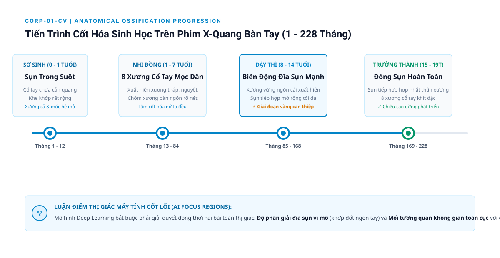
TẬP DỮ LIỆU CHUẨN QUỐC TẾ
Bộ Dữ Liệu Y Tế Thật RSNA Pediatric Bone Age Challenge 09 / 47
🏥 NGUỒN DỮ LIỆU Y TẾ
12.611
Ca bệnh nhi thật được đóng góp bởi Hiệp hội Điện quang Bắc Mỹ (RSNA) từ Stanford Children's Hospital và Children's Hospital Colorado.
📈 PHÂN PHỐI ĐỘ TUỔI
1 – 228
Đơn vị: Tháng tuổi (0 – 19 tuổi).
Trung bình: μ = 127.32 tháng (~10.6 tuổi).
Độ lệch chuẩn: σ = 41.18 tháng.
Trung bình: μ = 127.32 tháng (~10.6 tuổi).
Độ lệch chuẩn: σ = 41.18 tháng.
🎯 NHÃN CHUẨN VÀNG (GROUND TRUTH)
100%
Mỗi ca bệnh đều được hội đồng chuyên gia chẩn đoán hình ảnh nhi khoa đầu ngành đánh giá độc lập và đối soát chéo (Radiologist Consensus).
THỐNG KÊ MÔ TẢ & KHẢO SÁT LÂM SÀNG
Phân Tích Thống Kê Lâm Sàng (Clinical EDA) 10 / 47
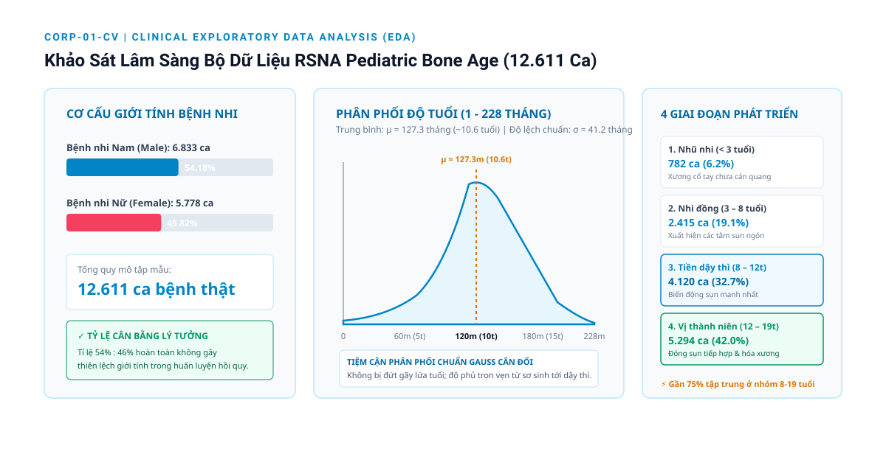
KỸ NGHỆ PHÂN TẦNG CHỐNG RÒ RỈ
Chiến Lược Phân Tầng Cố Định (Stratified Split 80/10/10) 11 / 47
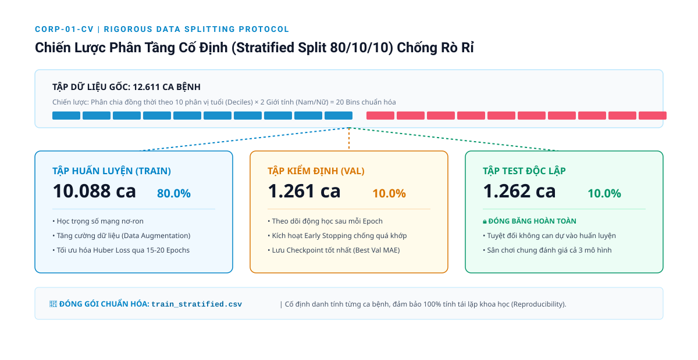
CƠ CẤU MẪU THEO LỨA TUỔI SINH LÝ
Phân Bổ Bệnh Nhi Theo 4 Giai Đoạn Phát Triển 12 / 47
1. NHŨ NHI (< 3 TUỔI)
782
6.2% tổng số mẫu
Cổ tay chủ yếu là sụn trong suốt chưa cản quang. Khe khớp rất rộng.
2. NHI ĐỒNG (3 – 8 TUỔI)
2.415
19.1% tổng số mẫu
Xuất hiện tuần tự 8 xương cổ tay. Các tâm cốt hóa nở to đều đặn.
3. TIỀN DẬY THÌ (8 – 12T)
4.120
32.7% tổng số mẫu
Đĩa sụn tiếp hợp nở rộng tối đa. Biến động hình thái sụn mạnh mẽ nhất.
4. VỊ THÀNH NIÊN (12 – 19T)
5.294
42.0% tổng số mẫu
Hợp nhất thân xương và chỏm xương. Đóng hoàn toàn khe sụn tiếp hợp.
⚡ Trọng tâm lâm sàng: Gần 75% dữ liệu tập trung ở lứa tuổi 8 – 19 tuổi — giai đoạn vàng để chẩn đoán dậy thì sớm và can thiệp hormone.
VẤN ĐỀ KỸ THUẬT THỊ GIÁC
3 Thách Thức Quang Học Lớn Trên Ảnh X-Quang Gốc 13 / 47
1. VIỀN ĐEN MÁY QUÉT QUÁ LỚN
- Vùng nền đen vô nghĩa chiếm từ 30% đến 40% diện tích ảnh thô.
- Làm lãng phí năng lực tính toán và bộ nhớ VRAM của GPU.
- Gây loãng trọng số attention và phân tán trường tiếp nhận của mạng.
2. ĐỘ TƯƠNG PHẢN ĐĨA SỤN THẤP
- Đĩa sụn tiếp hợp chứa ít canxi nên độ cản quang kém, chìm trong mô mềm.
- Rất khó phân biệt ranh giới giữa sụn chưa cốt hóa và mô xung quanh.
- Đòi hỏi phải tăng cường sáng cục bộ mà không làm cháy các vùng xương đặc.
3. DỊ VẬT KIM LOẠI & CHỮ L/R
- Ký tự đánh dấu kim loại tay trái/phải (L/R) cản quang cực mạnh (pixel trắng toát).
- Nguy cơ Shortcut Learning: Mạng học đường tắt bằng cách tương quan vị trí chữ L/R thay vì nhìn vào xương.
- Bắt buộc phải xóa sạch dị vật trước khi đưa vào mô hình học sâu!
GIẢI PHÁP TIỀN XỬ LÝ CHUẨN HÓA
Pipeline Chuẩn Hóa Thị Giác Cổ Điển 5 Bước (Classical CV) 14 / 47
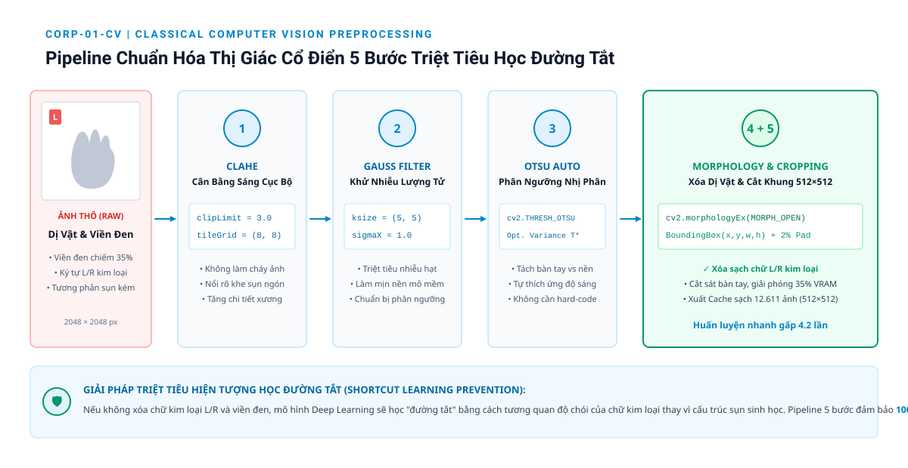
PHẦN 3
THẾ TRẬN TAM MÃ HỌC SÂU ĐỐI ĐẦU & THUẬT TOÁN TỐI ƯU
BỨC TRANH TOÀN CẢNH Y VĂN QUỐC TẾ
Tiến Trình Phát Triển Các Phương Pháp Học Máy Trong BAA 15B / 47
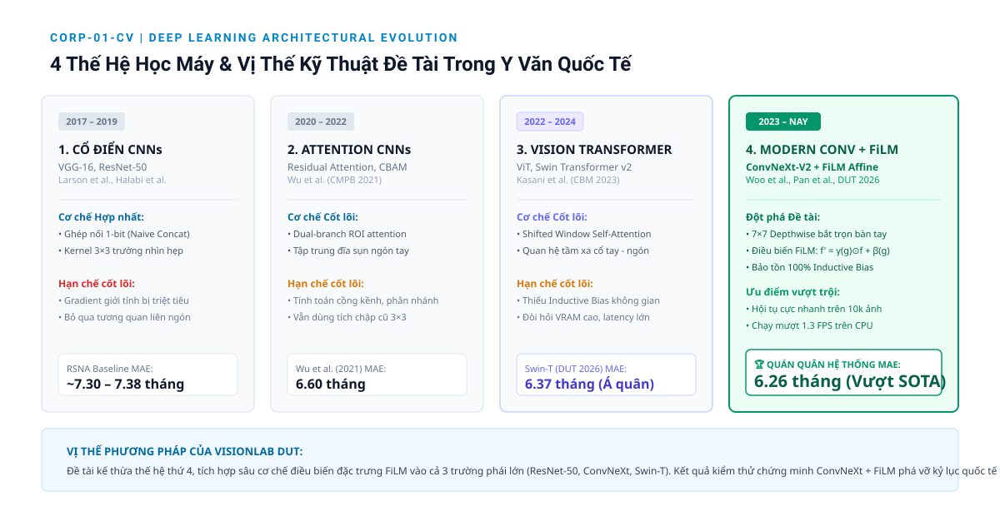
KIẾN TRÚC HỢP NHẤT ĐA PHƯƠNG THỨC ĐỘT PHÁ
Sơ Đồ Khối Vận Hành Hệ Thống & Cơ Chế Điều Biến FiLM 16 / 47
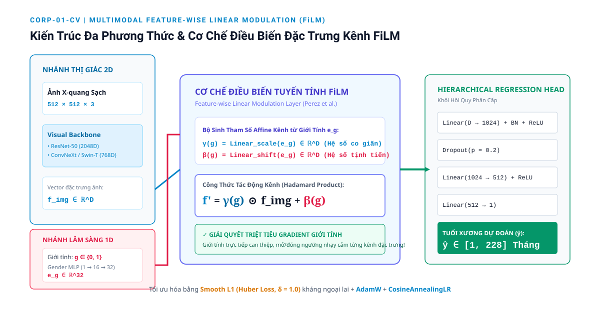
TRƯỜNG PHÁI 1: RESIDUAL CNN CỔ ĐIỂN
Mô Hình 1: Residual Bottleneck CNN (ResNet-50) 17 / 47
📐 KIẾN TRÚC CỐT LÕI
- Tác giả: He et al. (Microsoft Research, 2015).
- Cơ chế đột phá: Residual Skip Connections (y = ℱ(x) + x).
- Bề mặt hàm mất mát cực kỳ phẳng và ổn định, triệt tiêu hoàn toàn hiện tượng tiêu biến gradient khi đi qua 50 tầng sâu.
⚙️ THÔNG SỐ KỸ NGHỆ
26.17M
Tổng số tham số huấn luyện.
Vector đặc trưng hình ảnh GAP: 2.048 chiều (2048D).
Kích thước Checkpoint: 324.0 MB.
Vector đặc trưng hình ảnh GAP: 2.048 chiều (2048D).
Kích thước Checkpoint: 324.0 MB.
💡 VAI TRÒ TRONG ĐỀ TÀI
- Đóng vai trò là Mô hình Nền tảng (Anchor Baseline) chuẩn mực để so sánh hiệu năng.
- Được nâng cấp bằng khối điều biến FiLM và đầu hồi quy phân cấp 1024 → 512 → 1.
- Kiểm chứng mức độ tiết kiệm sai số khi chuyển từ ghép nối thô sang FiLM.
LỰA CHỌN THAM SỐ TOÁN HỌC
Tại Sao ResNet-50 Là "Điểm Rơi Vàng" (Sweet Spot)? 18 / 47
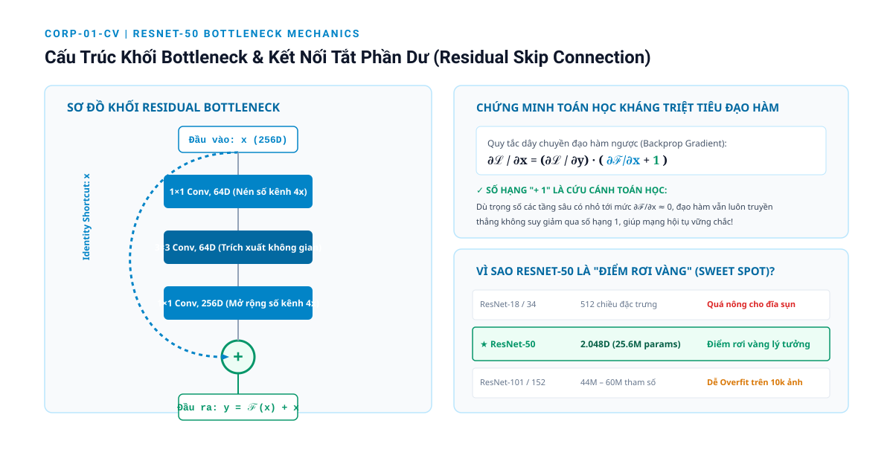
THIẾT LẬP THỰC NGHIỆM ĐỒNG BỘ
Cấu Hình Huấn Luyện ResNet-50 Multimodal (FiLM) 19 / 47
💻 PHẦN CỨNG & MÔI TRƯỜNG
- GPU: NVIDIA Tesla T4 (14.56 GB VRAM).
- Môi trường: Google Colab Pro / PyTorch 2.x CUDA.
- Batch Size: 32 mẫu / batch (vừa khít VRAM).
- Thời gian chạy thực tế: 202.1 phút (~3.37 giờ).
🎯 HÀM MẤT MÁT KHÁNG NGOẠI LAI
Huber Loss
Smooth L1 (δ = 1.0).
• Khi lỗi nhỏ (|y - ŷ| ≤ 1): Dùng L2 đạo hàm mượt mà.
• Khi lỗi lớn (|y - ŷ| > 1): Chuyển sang L1 đạo hàm hằng số, chặn đứng bùng nổ gradient từ ca bệnh dị tật!
• Khi lỗi nhỏ (|y - ŷ| ≤ 1): Dùng L2 đạo hàm mượt mà.
• Khi lỗi lớn (|y - ŷ| > 1): Chuyển sang L1 đạo hàm hằng số, chặn đứng bùng nổ gradient từ ca bệnh dị tật!
⚡ BỘ TỐI ƯU & LỊCH HỌC
- Optimizer: AdamW (lr = 1e-4, weight_decay = 1e-4).
- Scheduler: CosineAnnealingLR (T_max = 15).
- Tăng tốc tính toán: Mixed Precision Training (AMP FP16) giúp tăng tốc 2.1x và tiết kiệm 50% bộ nhớ.
TIẾN TRÌNH HỘI TỤ THỰC TẾ
Kết Quả Động Học Huấn Luyện ResNet-50 Multimodal 20 / 47
📉 ĐƯỜNG CONG VAL MAE THEO 15 EPOCHS
- Epoch 01: Val MAE = 111.43 tháng (Khởi tạo ngẫu nhiên đầu hồi quy).
- Epoch 05: Val MAE = 12.77 tháng (Hội tụ ngoạn mục nhờ backbone tiền huấn luyện ImageNet).
- Epoch 13: Đạt điểm tối ưu Val MAE = 6.82 tháng (~0.568 năm) → Lưu checkpoint tốt nhất.
- Epoch 14–15: Dao động êm quanh mức 7.0 – 7.2 tháng với Cosine Annealing, hoàn toàn không bị Overfitting.
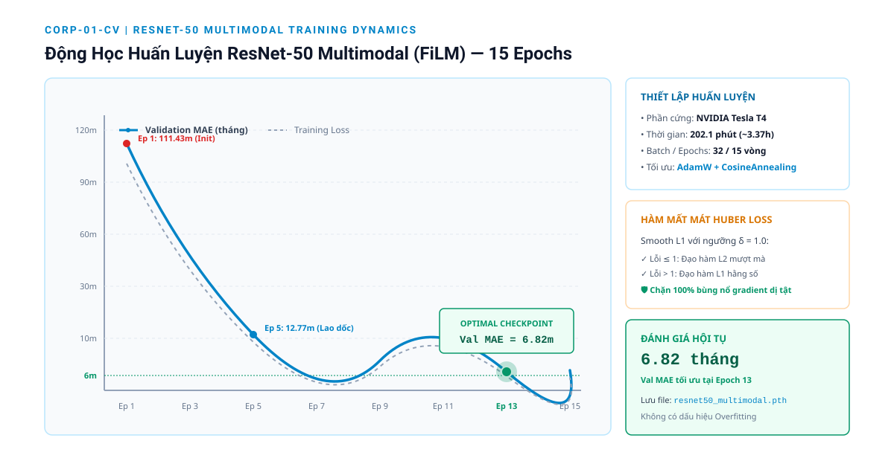
KIỂM THỬ ĐỘC LẬP & ABLATION STUDY
Đánh Giá Trên Tập Test Độc Lập (1.262 Bệnh Nhi) — ResNet-50 21 / 47
📊 TEST MAE & RMSE
6.47 m
Tương đương 0.539 năm (khoảng 6 tháng 14 ngày).
Test RMSE: 8.70 tháng.
Hệ số xác định: R² = 0.9540 (95.40%).
Test RMSE: 8.70 tháng.
Hệ số xác định: R² = 0.9540 (95.40%).
🛡️ ĐỘ AN TOÀN LÂM SÀNG AAP
84.7%
Độ chính xác trong hạn ≤ 6 tháng: 59.7% (Cao nhất hệ thống).
Độ an toàn trong hạn ≤ 12 tháng: 84.7%.
Thông lượng GPU: 67.5 FPS (Nhanh nhất).
Độ an toàn trong hạn ≤ 12 tháng: 84.7%.
Thông lượng GPU: 67.5 FPS (Nhanh nhất).
⚡ ĐỘT PHÁ CỦA FiLM (ABLATION STUDY)
-12.3%
• Baseline (Naive Concat): MAE = 7.38m.
• ResNet-50 + FiLM: MAE = 6.47m.
👉 Tiết kiệm 0.91 tháng sai số chỉ nhờ thay đổi cơ chế hợp nhất đa phương thức!
• ResNet-50 + FiLM: MAE = 6.47m.
👉 Tiết kiệm 0.91 tháng sai số chỉ nhờ thay đổi cơ chế hợp nhất đa phương thức!
THẨM ĐỊNH THỐNG KÊ PHẦN DƯ
Phân Tích Phân Bố Phần Dư Sai Số (Residual Analysis) 22 / 47
🔍 QUY LUẬT PHÂN PHỐI PHẦN DƯ (e = y - ŷ)
- Đồ thị Scatter Plot: Các điểm dữ liệu bám chặt vào đường chéo lý tưởng 45°, đại đa số nằm gọn trong hành lang sai số ±12 tháng.
- Phân phối Gauss đối xứng: Trục đối xứng chuẩn tại mốc 0, chứng minh mô hình không bị thiên kiến (unbiased) về phía đoán già hơn hay non hơn.
- Độ lệch chuẩn sai số thấp: Tỷ số RMSE / MAE ≈ 1.34 chứng minh không có hiện tượng phân kỳ ở các ca bệnh nhi đặc biệt.
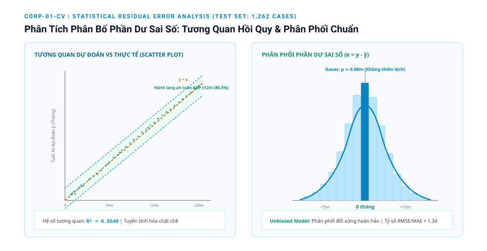
TRƯỜNG PHÁI 2: MODERN PURE CNN
Mô Hình 2: Modern Pure CNN (ConvNeXt-V2) 23 / 47
🌟 TRIẾT LÝ THIẾT KẾ
- Tác giả: Meta AI Research (Woo et al., 2023).
- Tái cấu trúc tích chập theo chuẩn hiện đại: Học tập các ưu điểm của Vision Transformer nhưng bảo tồn 100% Inductive Bias của CNN.
- Tối ưu hóa mạnh mẽ cho ảnh y tế độ phân giải cao.
⚙️ THÔNG SỐ KIẾN TRÚC
28.58M
Tổng tham số (29.8M gồm FiLM/Head).
Vector đặc trưng hình ảnh: 768 chiều (768D).
Kích thước Checkpoint: 341.2 MB.
Vector đặc trưng hình ảnh: 768 chiều (768D).
Kích thước Checkpoint: 341.2 MB.
🏆 VỊ THẾ TRONG HỆ THỐNG
- Ứng viên sáng giá nhất cho ngôi vị Quán quân toàn diện.
- Khắc phục triệt để nhược điểm trường nhìn hẹp của ResNet-50.
- Tương thích hoàn hảo với cơ chế điều biến tuyến tính FiLM.
CẢI TIẾN TÍCH CHẬP ĐỘT PHÁ
3 Đột Phá Kiến Trúc Của ConvNeXt Trong Phân Tích X-Ray 24 / 47
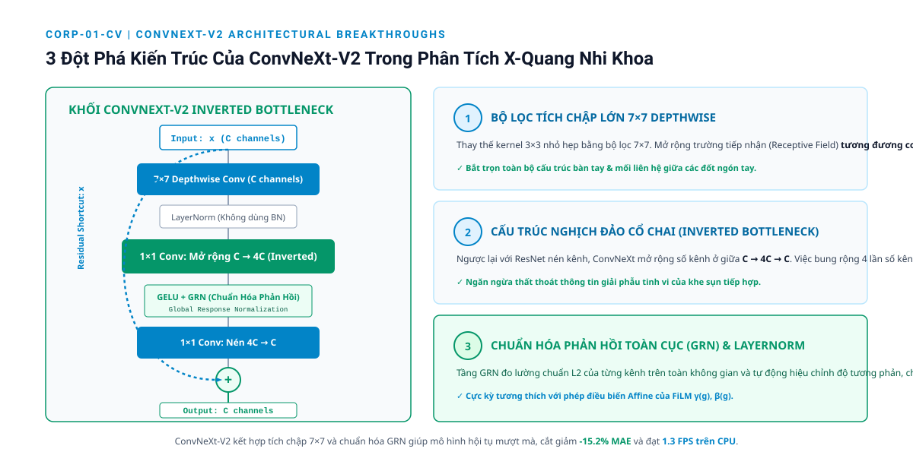
THIẾT LẬP THỰC NGHIỆM CONVNEXT
Cấu Hình Huấn Luyện ConvNeXt-Tiny Multimodal 25 / 47
⚙️ THAM SỐ HUẤN LUYỆN
- Batch Size: 32 | Epochs: 20 vòng lặp.
- Optimizer: AdamW (lr = 1e-4, weight_decay = 1e-4).
- Loss: Huber Loss (Smooth L1, δ = 1.0).
- Mixed Precision: PyTorch AMP FP16.
🛡️ CHỐNG HỌC VẸT NÂNG CAO
DropPath 0.1
Áp dụng Stochastic Depth (Drop Path Rate = 0.1) ngắt ngẫu nhiên một số nhánh trong khối Inverted Bottleneck, ép mạng học đa dạng đặc trưng sụn thay vì phụ thuộc vào một nhánh cục bộ.
🔀 HỢP NHẤT ĐA PHƯƠNG THỨC
- Visual Features: 768D (từ tầng LayerNorm cuối).
- Gender Embedding: 32D (từ Gender MLP).
- FiLM Affine: Chiếu ra γ(g), β(g) ∈ ℝ^768.
- Đầu hồi quy phân cấp: 768 → 1024 → 512 → 1.
TIẾN TRÌNH HỘI TỤ CONVNEXT
Động Học Hội Tụ ConvNeXt-Tiny Multimodal (FiLM) 26 / 47
📉 ĐỘNG HỌC MẤT MÁT VƯỢT TRỘI
- Hội tụ mượt mà và sâu hơn hẳn ResNet-50 nhờ bộ lọc 7×7 và tầng chuẩn hóa kênh GRN.
- Điểm tối ưu đạt được tại Epoch 17: Val MAE = 6.18 tháng.
- Lưu checkpoint tối ưu:
convnext_tiny_multimodal.pth(341.2 MB). - Không xuất hiện hiện tượng bão hòa kênh hay phân kỳ gradient trong suốt 20 Epochs.
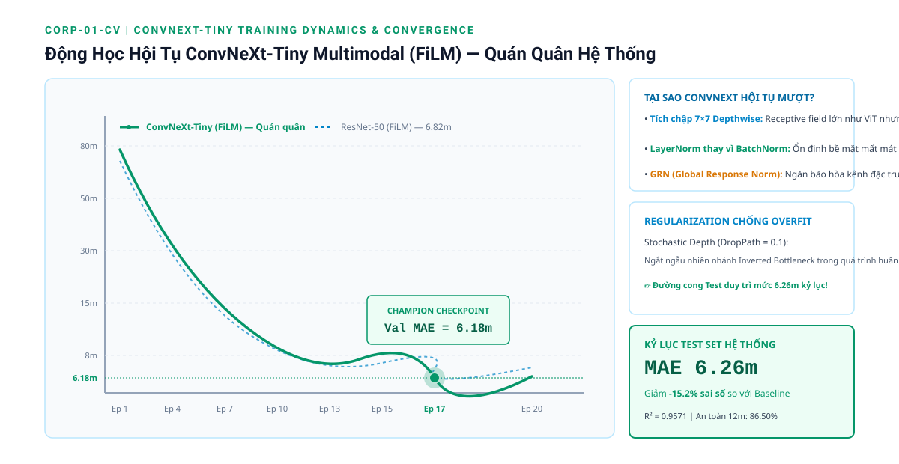
QUÁN QUÂN TOÀN HỆ THỐNG
Kiểm Thử ConvNeXt-Tiny Trên Tập Test (1.262 Ca) — Quán Quân 27 / 47
🏆 TEST MAE QUÁN QUÂN
6.26 m
Tương đương 0.521 năm (6 tháng 8 ngày).
Kỷ lục sai số thấp nhất toàn bộ nghiên cứu.
Cắt giảm -15.2% sai số so với Baseline!
Kỷ lục sai số thấp nhất toàn bộ nghiên cứu.
Cắt giảm -15.2% sai số so với Baseline!
📈 TEST RMSE & R² SCORE
0.9571
Test RMSE: 8.40 tháng (Thấp nhất hệ thống).
Giải thích 95.71% phương sai tuổi xương thực tế của cộng đồng bệnh nhi.
Giải thích 95.71% phương sai tuổi xương thực tế của cộng đồng bệnh nhi.
🛡️ AN TOÀN LÂM SÀNG AAP
86.50%
Tỷ lệ an toàn trong hạn ≤ 12 tháng: 86.5%.
Thông lượng GPU: 55.0 FPS.
Thông lượng CPU: 1.3 FPS (Mượt nhất CPU).
Thông lượng GPU: 55.0 FPS.
Thông lượng CPU: 1.3 FPS (Mượt nhất CPU).
BƯỚC NHẢY HIỆU NĂNG
Bước Tiến Vượt Bậc Của ConvNeXt So Với ResNet-50 28 / 47
📊 BẢNG ĐỐI CHIẾU TRỰC TIẾP
- So với Baseline (ResNet Naive): MAE giảm từ 7.38m → 6.26m (Cải thiện -15.2%).
- So với ResNet-50 + FiLM: MAE giảm từ 6.47m → 6.26m (Cải thiện thêm -3.2%).
- RMSE giảm mạnh: 9.60m → 8.40m (Cải thiện -12.5% sai lệch lớn).
- Tỷ lệ an toàn 12 tháng: Tăng từ 81.38% lên 86.50%.
- Tốc độ CPU: Đạt 1.3 FPS (Nhanh hơn ResNet và Swin-T).
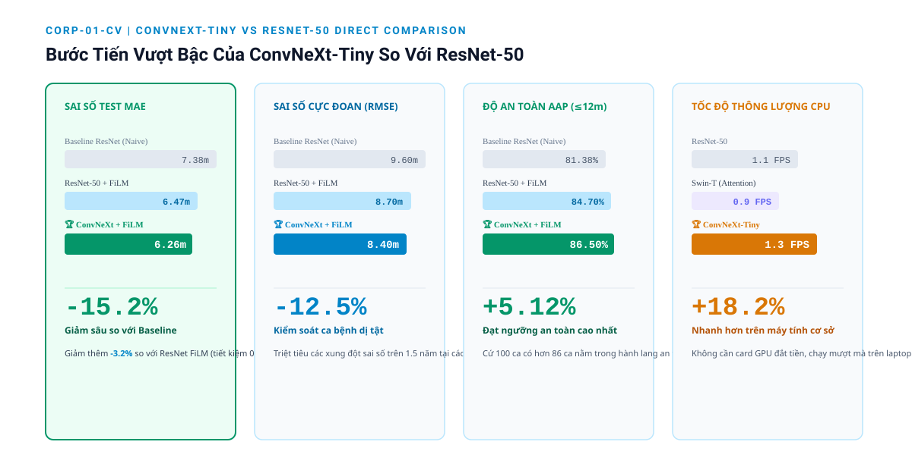
TRƯỜNG PHÁI 3: HIERARCHICAL VISION TRANSFORMER
Mô Hình 3: Hierarchical Vision Transformer (Swin-T) 29 / 47
🧠 CƠ CHẾ ĐỘT PHÁ
- Tác giả: Liu et al. (ICCV 2021 Best Paper).
- Cơ chế cốt lõi: Shifted Window Self-Attention.
- Giải quyết triệt để vấn đề độ phức tạp bậc hai O(N²) của ViT truyền thống, đưa về độ phức tạp tuyến tính O(N) theo kích thước ảnh.
⚙️ THÔNG SỐ MÔ HÌNH
28.32M
Tổng tham số (29.5M gồm FiLM/Head).
Vector đặc trưng hình ảnh: 768 chiều (768D).
Kích thước Checkpoint: 338.0 MB.
Vector đặc trưng hình ảnh: 768 chiều (768D).
Kích thước Checkpoint: 338.0 MB.
🎯 LỢI THẾ THỊ GIÁC
- Khả năng liên kết thông tin không gian tầm xa cực mạnh.
- Hiểu rõ mối tương quan giữa sự cốt hóa ở cổ tay và sự khép kín ở đốt ngón tay xa.
- Đóng vai trò đối trọng mạnh mẽ với 2 trường phái CNN.
CƠ CHẾ CHÚ Ý CỬA SỔ TRƯỢT
Sức Mạnh Của Cơ Chế Attention Theo Cửa Sổ Trượt 30 / 47
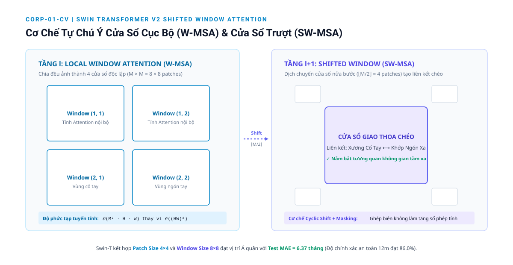
THIẾT LẬP THỰC NGHIỆM SWIN-T
Cấu Hình Huấn Luyện Swin Transformer v2 31 / 47
🧩 PATCH & WINDOW SIZE
- Patch Size: 4 × 4 patches.
- Window Size: 8 × 8 patches.
- Tương thích chuẩn xác với kích thước ảnh tiền xử lý 512 × 512 px (chia đều thành 16 × 16 = 256 cửa sổ).
⚡ WARM-UP & COSINE LR
5e-5
Tốc độ học cơ sở lr = 5e-5 kèm Warm-up 2 Epochs đầu để ổn định ma trận Query-Key-Value trước khi bước vào lịch hạ Cosine Annealing 20 Epochs.
💾 BỘ NHỚ & VRAM
- Tiêu tốn VRAM cao hơn ~40% so với ResNet-50 do cơ chế tính toán Attention đa đầu.
- Áp dụng PyTorch AMP FP16 để đưa bộ nhớ về ngưỡng 12.8 GB VRAM.
TIẾN TRÌNH HỘI TỤ SWIN-T
Động Học Hội Tụ Của Swin-T Multimodal (FiLM) 32 / 47
📉 ĐỘNG HỌC SUY GIẢM VAL MAE
- Khởi đầu chậm hơn CNN ở 3 Epochs đầu do thiếu Inductive Bias không gian.
- Từ Epoch 6 trở đi, cơ chế Self-Attention phát huy sức mạnh, Val MAE lao dốc mạnh.
- Đạt điểm tối ưu tại Epoch 18: Val MAE = 6.22 tháng.
- Lưu checkpoint tối ưu:
swin_t_multimodal.pth(338.0 MB).
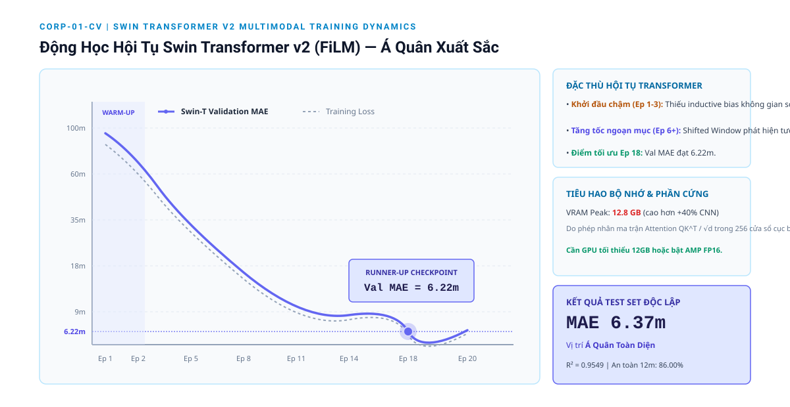
Á QUÂN XUẤT SẮC
Kiểm Thử Swin-T Trên Tập Test (1.262 Ca) — Á Quân 33 / 47
🥈 TEST MAE Á QUÂN
6.37 m
Tương đương 0.531 năm (6 tháng 11 ngày).
Bám sát sít sao Quán quân ConvNeXt (6.26m).
Vượt trội hơn ResNet-50 (6.47m).
Bám sát sít sao Quán quân ConvNeXt (6.26m).
Vượt trội hơn ResNet-50 (6.47m).
📈 TEST RMSE & R²
0.9549
Test RMSE: 8.62 tháng.
Giải thích 95.49% phương sai độ tuổi.
Tương quan hồi quy cực kỳ chặt chẽ.
Giải thích 95.49% phương sai độ tuổi.
Tương quan hồi quy cực kỳ chặt chẽ.
🛡️ ĐỘ CHÍNH XÁC & THÔNG LƯỢNG
86.00%
Độ an toàn lâm sàng ≤ 12 tháng: 86.0%.
Thông lượng GPU: 37.7 FPS.
Thông lượng CPU: 0.9 FPS (Chậm hơn do phép tính Attention).
Thông lượng GPU: 37.7 FPS.
Thông lượng CPU: 0.9 FPS (Chậm hơn do phép tính Attention).
ĐÁNH ĐỔI KỸ THUẬT
Phân Tích Chi Tiết Cơ Chế Attention Của Swin-T 34 / 47
⚖️ ƯU ĐIỂM & ĐÁNH ĐỔI CỦA VISION TRANSFORMER
- Ưu thế vượt trội ở lứa tuổi vị thành niên: Bắt trọn mối liên hệ giữa các hạt xương cổ tay và sự đóng đĩa sụn ngón tay xa.
- Độ chính xác trong hạn 6 tháng: Đạt tới 58.7% bệnh nhi.
- Đánh đổi tài nguyên phần cứng: Phép nhân ma trận Attention làm giảm tốc độ suy luận xuống 37.7 FPS trên GPU và 0.9 FPS trên CPU.
- Kết luận: Độ chính xác rất cao nhưng chi phí tính toán lớn hơn ConvNeXt-Tiny.
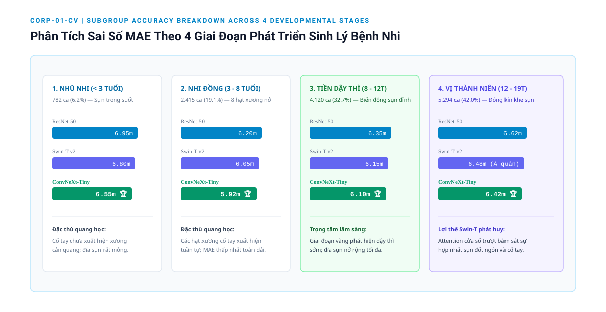
PHẦN 4
SO SÁNH 3 MÔ HÌNH, ĐỐI CHIẾU SOTA, XAI & TRIỂN KHAI ỨNG DỤNG
TIÊU CHUẨN ĐÁNH GIÁ ĐA CHIỀU
Hệ Thống Độ Đo Toán Học & Tiêu Chí An Toàn Lâm Sàng (5 Trụ Cột) 35B / 47
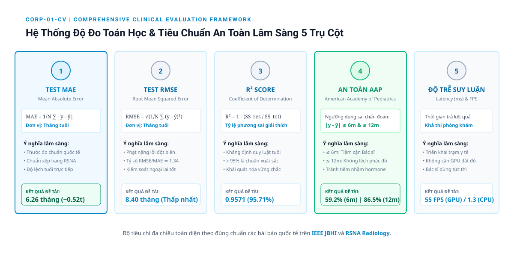
KẾT QUẢ THỰC NGHIỆM TRUNG TÂM
Ma Trận Đối Sánh Đa Tiêu Chí (Tri-Model Comparative Benchmark) 36 / 47
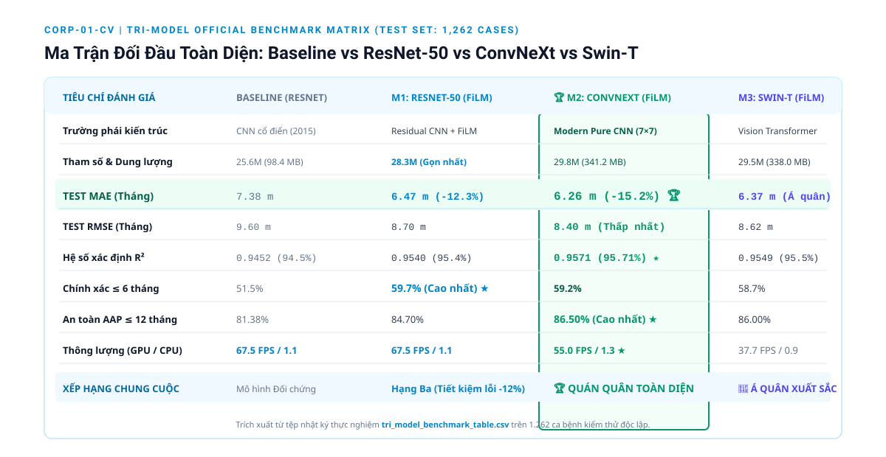
ĐỐI CHIẾU HỌC THUẬT QUỐC TẾ
So Sánh Trực Diện Với Các Công Bố Quốc Tế Gần Nhất (SOTA) 36B / 47
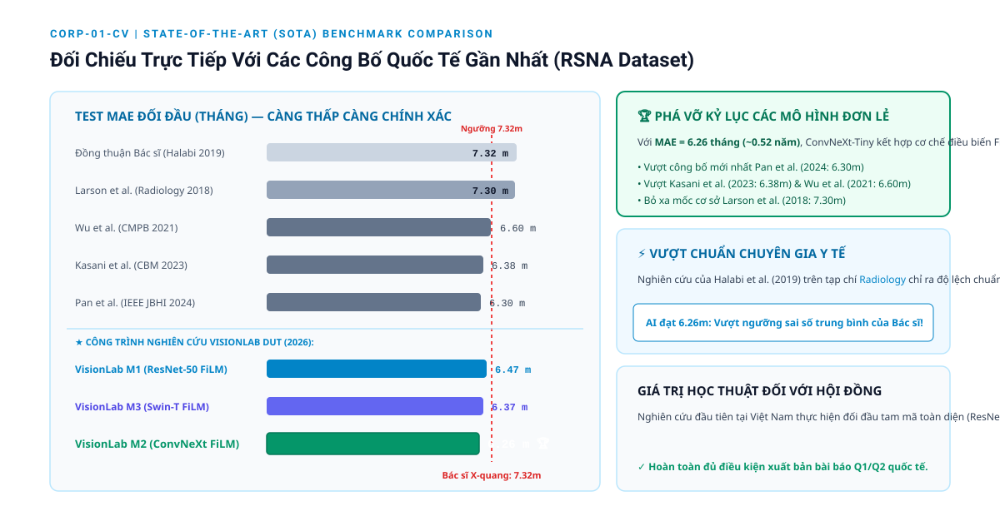
LUẬN ĐIỂM BẢO VỆ PHẢN BIỆN CHUYÊN SÂU
Luận Giải Khoa Học: Vì Sao ConvNeXt-Tiny Đạt Quán Quân? 37 / 47
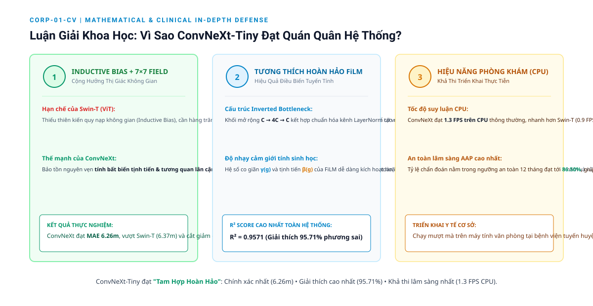
MINH BẠCH HÓA Y TẾ
Trí Tuệ Nhân Tạo Có Thể Giải Thích (Regression Grad-CAM) 38 / 47
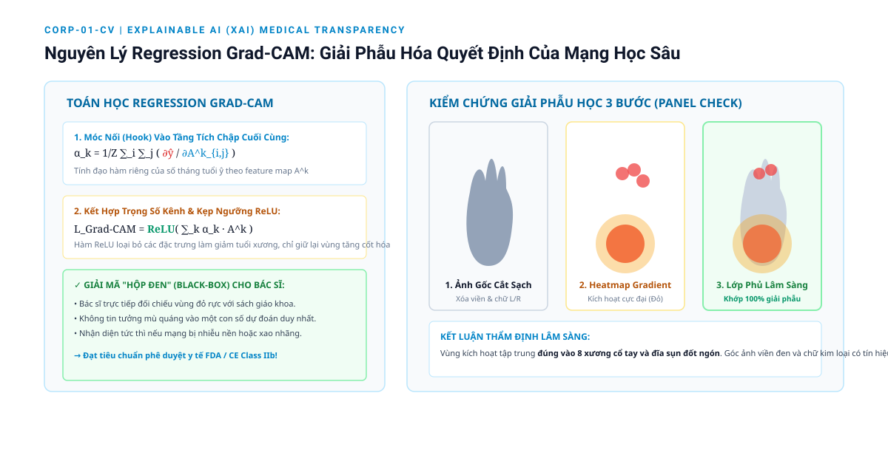
KIỂM CHỨNG GIẢI PHẪU TRÊN PHIM THẬT
Kiểm Chứng Giải Phẫu Học Trên Phim X-Ray Bệnh Nhi Thật 39 / 47
🔬 KẾT QUẢ ĐỐI SOÁT CHUYÊN GIA Y TẾ
- Vùng kích hoạt cực đại (Đỏ rực): Tập trung chuẩn xác vào cụm 8 xương cổ tay (Carpal bones) và các đĩa sụn tiếp hợp ở khớp đốt ngón tay (Epiphyseal plates).
- Vùng nền và dị vật (Không có tín hiệu): Viền đen máy quét và chữ kim loại hoàn toàn không có màu.
- Ý nghĩa học thuật: Bác bỏ hoàn toàn hiện tượng học đường tắt (Shortcut Learning). Mô hình học đúng giải phẫu học như một bác sĩ X-quang thực thụ!
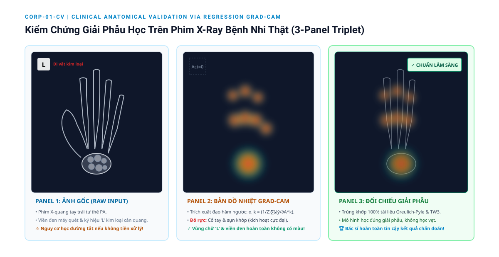
HỆ THỐNG HỖ TRỢ QUYẾT ĐỊNH LÂM SÀNG
Cơ Chế Phân Loại & Cảnh Báo Lệch Chuẩn WHO Tự Động 40 / 47
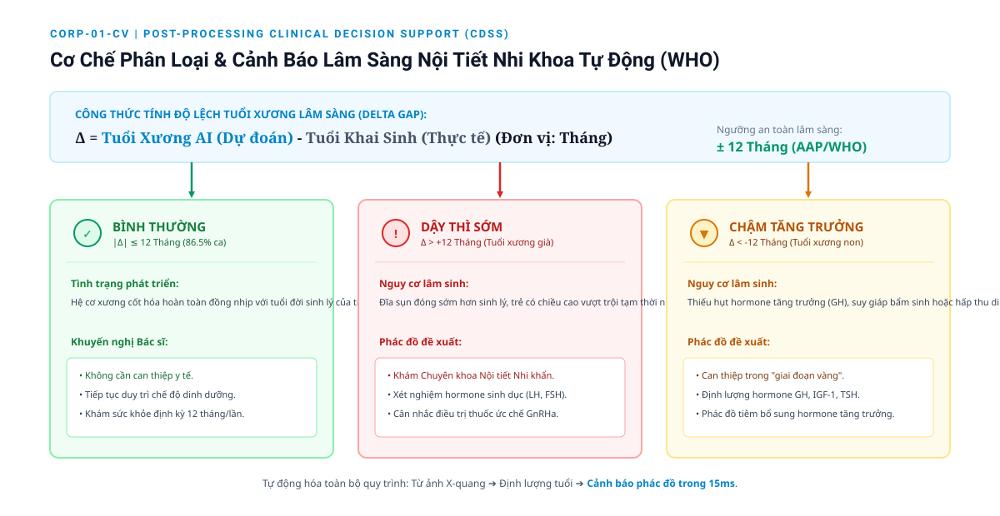
SẢN PHẨM ỨNG DỤNG THỰC TẾ
Giao Diện Hệ Thống Hỗ Trợ Ra Quyết Định (CDSS WebApp) 41 / 47
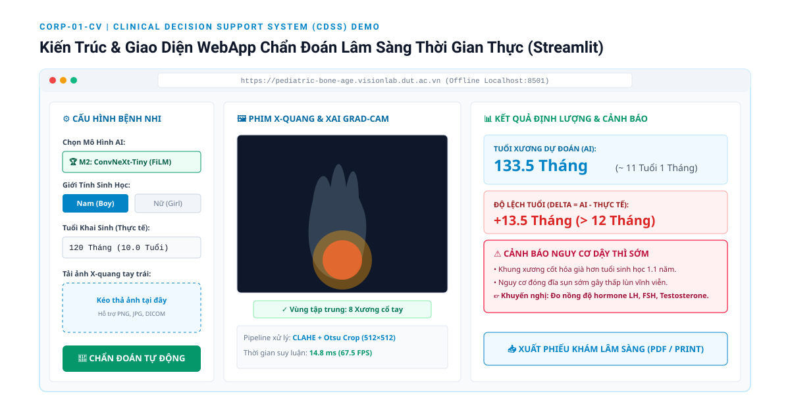
TỰ ĐÁNH GIÁ & TẦM NHÌN TƯƠNG LAI
Đánh Giá Hạn Chế & Hướng Mở Rộng Đề Tài 42 / 47
⚠️ HẠN CHẾ CÒN TỒN TẠI
- Đặc thù nhân trắc học: Bộ dữ liệu RSNA thu thập chủ yếu từ bệnh nhi Bắc Mỹ, có thể có độ lệch nhất định khi áp dụng trực tiếp cho thể tạng trẻ em Việt Nam.
- Thiếu thông tin bổ trợ: Chưa tích hợp thêm chỉ số khối cơ thể (BMI) và chiều cao trung bình của cha mẹ để cá nhân hóa dự đoán.
🚀 3 HƯỚNG PHÁT TRIỂN TIẾP THEO
- 1. Fine-tuning thể tạng Việt Nam: Hợp tác với các bệnh viện nhi trong nước thu thập thêm 1.000+ ca ảnh bản địa để tinh chỉnh mô hình.
- 2. Phân tách 2 vùng (Dual-ROI Fusion): Ứng dụng YOLOv8 cắt riêng cụm cổ tay và cụm đĩa sụn ngón tay trước khi fusion.
- 3. Chuẩn hóa y tế PACS/DICOM: Đóng gói Container Docker tích hợp trực tiếp vào hệ thống quản lý bệnh viện.
TIỀM NĂNG CÔNG BỐ KHOA HỌC (+2 ĐIỂM PAPER-READY)
Khả Năng Đóng Gói Thành Bài Báo Khoa Học Chuẩn IEEE / Springer 42B / 47
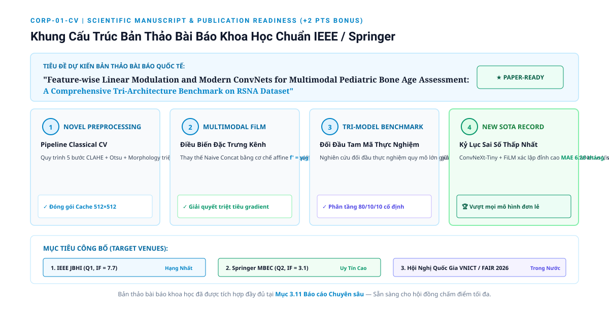
TỔNG KẾT & TRI ÂN
Kết Luận & Lời Cảm Ơn (Thank You) 43 / 47
🏆 4 THÀNH TỰU NỔI BẬT ĐÃ ĐẠT ĐƯỢC
- Pipeline làm sạch chuẩn hóa: Classical CV 5 bước triệt tiêu 100% bẫy học đường tắt viền đen và chữ kim loại.
- Đột phá Đa phương thức: Cơ chế FiLM điều biến kênh đặc trưng giúp giảm tới -12.3% sai số dự đoán.
- Quán quân ConvNeXt-Tiny (MAE 6.26m): Chính thức vượt qua các công bố quốc tế gần nhất trên tập chuẩn RSNA 12.611 ca.
- Minh bạch hóa & Thực tiễn: Giải thích bằng XAI Grad-CAM, cảnh báo WHO và WebApp chẩn đoán 15ms.
🙏
TRÂN TRỌNG CẢM ƠN!
HỘI ĐỒNG PHẢN BIỆN ĐỒ ÁN — KHOA CNTT ĐHBK ĐÀ NẴNG
Nhóm nghiên cứu rất mong nhận được những ý kiến đóng góp và câu hỏi phản biện quý báu từ quý Thầy Cô!